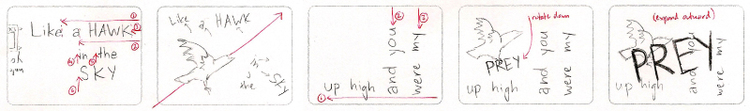
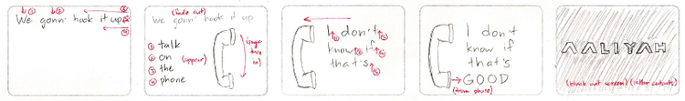
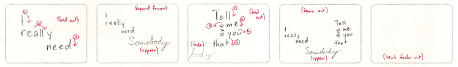
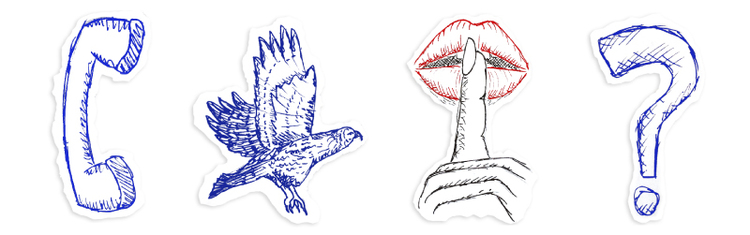
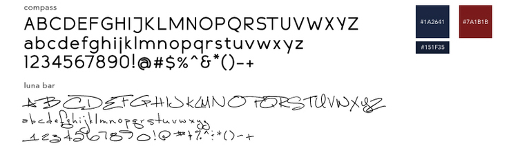

ARE YOU THAT SOMEBODY?
Motion Graphics & Typography
The idea of bringing meaning and motion together in motion graphics was always intriguing to me. When it came to motion typography, I was able to join the two by creating a lyric video for Aaliyah's song "Are You That Somebody?"
The challenge with this project was deciding how to visually represent Aaliyah's words to convey the feeling of her singing and the meaning behind her words.
  Initial storyboarding
I wanted to create various motions for the lyrics to showcase the alternation between fast and slow rhythms of the song. I also included some sketches and a video clip of my crying niece to give more visual variety.
 I added in clips of the song's original music video at the beginning and ending of the video, but I feel that the rest of video was also able to show Aaliyah's musical dynamic pretty well.
*This project received the Merit Award for Digital Screen-based category of the UC Davis Design-by-Design Annual Juried Student Design Competition.